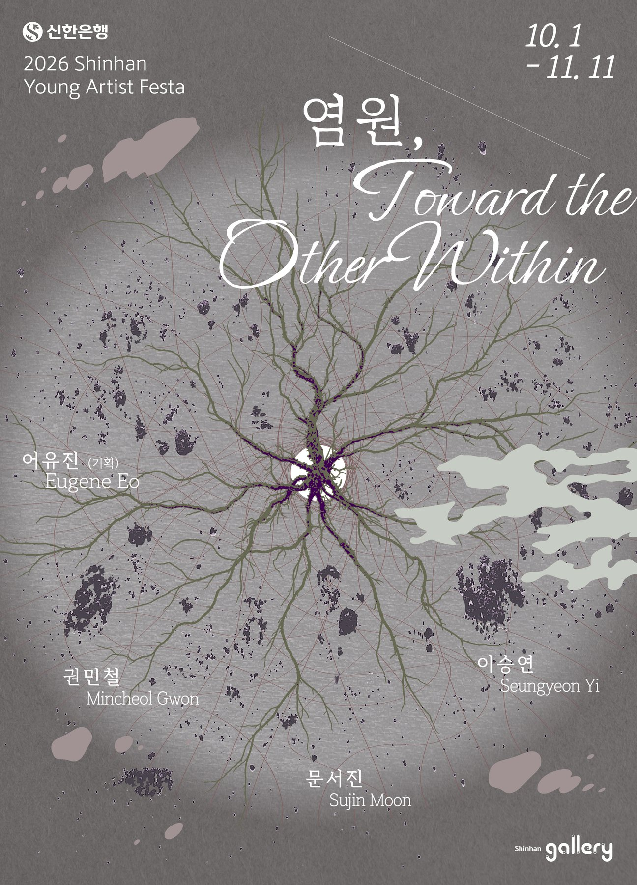

염원, Toward the Other Within
- . . .

서문Statement (KR)
신한갤러리는 2026년 10월 1일부터 11월 11일까지 ‘2026 Shinhan Young Artist Festa’ 그룹 공모전에 선정된 작가 권민철, 문서진, 이승연, 기획자 어유진의 《염원, Toward the Other Within》을 개최한다.
우리는 무엇을 위해 계속 상상하고, 관계 맺기를 반복하고, 땅 위를 걷고, 손짓하는 걸까. 이건 아마 타자를 향한 조응의 염원일 것이다. 그 타자도 사실은 이미 우리 안에 와있는지도 모른다. 그렇기에 우리는 염원을 무언가를 막연하게 바라는 마음이 아닌 우리가 향해있는 방향과 실천적 태도로서 제시하려 한다.
전시장에는 염원의 세 가지 태도가 있다. 누군가는 만나본 적 없는 이가 쓰던 것 같은 컵과 신발을 떠내고, 그가 느꼈을 감상으로 가득한 방을 미리 차려 둔다. 누군가는 생을 다한 식물을 짓이겨 종이를 뜨고, 그 안에 씨앗을 심어 불탄 땅 위에 흩뿌린다. 누군가는 사라진 존재가 남긴 흔적을 손끝으로 더듬고 문지르며 두텁게 쌓인 시간의 지층을 파낸다. 이 행위들은 아무것도 보증하지 않는다. 기다리는 당신은 예정된 날에 도착하지 않고, 씨앗은 발아를 약속하지 않으며, 사라진 것은 돌아오지 않는다. 그렇다면 세 작가는 무엇을 위해 이토록 공들여 몸을 움직이는가.
이 전시는 그 대답의 자리에 염원을 놓는다. 여기서 염원은 이루어지기를 빌고 마는 마음이 아니라, 결핍을 서둘러 메우지도, 없는 셈 치지도 않은 채, 부재를 향해 몸을 돌려 두는 자세다. 도나 해러웨이는 위태로운 세계와 다시 관계 맺는 일을 응답-능력(response-ability)1 이라 불렀다. 자신의 취약함을 아는 존재가 타자와의 관계 맺기를 지속하며 세계를 향해 계속 응답하는 것. 그 응답이 반복되는 동안 바람은 감정에 머물지 않고 태도로서 작동하며, 인간과 비인간이 함께-되어가는(becoming-with)2 관계의 자리를 여는 실천적 행위가 된다.
권민철은 부재하는 이의 방에 들어가는 듯한 설치로 그의 자리를 차려 두는 태도를 보여준다. 일상에서 관습적으로 통용되는 개념에 깃든 추상적 이상성을 좇으며, 물질적 조형으로 빚어지는 과정에서 발생하는 불완전성을 제시하는 작가는 대상에 내포된 상투적 감각을 다양한 주관의 형태로 해체하고 확장한다. ‘아직 만나지 못한 당신’이 쓰던 것 같은 사물들을 조각가 주변의 흔한 재료들로 떠내고, ‘완벽한’ 날씨의 하늘이 프린트된 커튼을 걸어 둔다. 조심스레 살살 만져야 할 것만 같은 그의 작업들은 제목을 힌트로 비가시적인 존재를 상상하는 즐거움을 선사한다. 상투적이어서 누구의 것도 될 수 있는 이미지들 속에서 부재는 오히려 또렷해지고, 그 빈자리의 타자를 상상으로 채우며 주체에게 이미 내재된 타자를 인지하는 일은 관객의 몫으로 남는다. 자리를 마련하는 것이 아직 오지 않은 시간에 대해 상상하는 일의 반복이라면, 문서진에게 염원은 심고 뿌리고 떠도는 일의 반복이다.
문서진은 해외와 한국을 떠돌고 머문 장소에서 얻은 ‘생을 다한 식물의 몸’으로 종이를 뜨고, 그 안에 씨앗을 심는다. 종이가 무너지고 분해되어야만 씨앗은 발아하므로, 그의 작업에서 도래는 언제나 소멸을 경유한다. 산불이 지나간 활공장 위로 씨앗 종이를 흩뿌리는 파종의 몸짓은 숲의 귀환을 보증하지 못한다. 그럼에도 사람의 활공과 바람과 열과 기후와 씨앗이 한데 얽혀 이루어 내는 이 행위는, 상실한 땅을 향해 내미는 응답의 가장 구체적인 형상이 된다. 거대한 활공과 파종이 펼쳐지는 영상 앞에는 순환되는 시간성이 유예된 채 한 장의 거대한 종이로서 관객의 눈앞에 서 있고, 이를 마주하는 전시장은 감각-존재-생태의 조건을 느끼는 장소가 된다. 이렇게 소멸을 전제한 작가의 노동은 매일 꽁꽁 언 호수 위로 걸어가 눈을 퍼서 산을 만드는 일로부터 시작되었다. 『호수 일지』를 통해 생생하게 전해오는 그의 심리적 고백은 언제 깨질지 모르는 얼음 위에서 곧 녹아 없어질 산을 만드는 행위의 반복과 땀방울을 우리에게 전해주며 경외감마저 느껴지게 하는 실천적 태도이다. 사라질 것을 만드는 손이 있다면, 이미 사라진 것을 더듬는 손도 있다.
이승연은 비선형적 시간과 두텁게 쌓인 역사의 지층을 파헤쳐, 장소에 남은 비인간 존재와 관계 맺기를 시도한다. 그의 신작은 일본의 한 지진 피해 지역, 오랜 세월 파도에 깎여온 해식애(海蝕崖)를 직접 찾아가 보고 만지고 사진으로 담아온 경험에서 출발한다. 파내는 동시에 쌓아 올리는 손의 운동은 땅이 오래도록 축적해온 지질학적 시간과 재난이 새긴 사건의 시간, 그리고 그것을 더듬는 작가의 현재의 몸을 하나의 면 위에 포갠다. 강한 촉각 충동을 부르는 그 표면을 관람객이 만지는 순간, 또 하나의 시제가 겹쳐진다. 여기서 시간은 결코 한 방향으로 흐르지 않는다. 작가는 사라진 존재들을 해석하거나 궁금해하지 않고 조용히 그들을 응시하며, 인간의 시간 바깥에서도 여전히 이어지는 진동에 응답한다. 사라진 것과 아직 오지 않은 것이 한 표면 위에서 함께 진동하는 이 비선형적 시간성이야말로, 비인간 존재의 시간과 인간의 감각이 비로소 마주쳐 함께-되어가는 조응의 자리다.
재료도 형상도 다르지만 세 갈래 태도와 반복되는 몸짓들은 같은 곳을 향해 있다. 아직 오지 않았거나 이미 사라져 끝내 확인되지 않을 타자들을, 그럼에도 관계를 지속하려 붙들어 두는 일. 전시장에서 당신은 하늘을 밀고 누군가의 방에 들어서고, 발아를 기다리다 유예된 시간 속의 씨앗 곁에 서고, 지층에서 막 파낸 듯한 형상들 앞에 다다를 것이다. 무언가를 바란다는 것은 이미 응답하기 시작했다는 것. 이 방들을 지나는 동안, 그 자세가 잠시 당신의 몸에 겹쳐지기를 바란다.
- 도나 해러웨이가 『트러블과 함께하기(Staying with the Trouble)』(2016)에서 제시한 개념. 기존의 '책임(responsibility)'을 해체하여 '응답(response)'과 '능력(ability)'으로 다시 쓴 말이다. 도덕적 의무나 사후적 부담이 아니라, 타자와의 관계 속에서 서로가 응답할 수 있는 역량을 함께 길러 내는 일을 뜻한다. 해러웨이에게 응답-능력은 홀로 갖추는 자질이 아니라 관계 안에서 배양되는 상호적 능력이며, 취약한 세계에 응답하기를 멈추지 않는 태도로서 실천된다. Donna J. Haraway, Staying with the Trouble: Making Kin in the Chthulucene (Durham: Duke University Press, 2016).
- 해러웨이가 『종이 만날 때(When Species Meet)』(2008)와 『트러블과 함께하기』에서 전개한 관계적 존재론의 핵심 개념. 개별 존재가 먼저 완결된 채 존재하다가 나중에 관계를 맺는 것이 아니라, 서로 얽히는 관계 속에서 비로소 각자가 무엇이며 누구인지가 형성된다는 사유다. "존재는 관계에 앞서지 않는다"는 명제로 요약되며, 인간과 비인간을 포함한 이질적 파트너들이 서로를 만들어 가는 공동의 세계 짓기(world-making)를 가리킨다. Donna J. Haraway, When Species Meet (Minneapolis: University of Minnesota Press, 2008).
참여 작가Artists (KR)
권민철 Mincheol Gwon
일상에서 상투적으로 통용되는 서정적인 이미지들에 깃든 관념에 관심이 있다. 이상적이거나 정제된 심상을 물질적 조형으로 만드는 과정에서 발생하는 불완전성을 제시함으로써, 대상에 내포된 정형적 감각을 다양한 주관의 형태로 해체하고 확장한다. 개인전 《The Perfect Weather》(아트센터예술의시간, 서울, 2026), 《만나본 적 없는 당신에게》(플루리포텐트 아트 스페이스, 서울, 2024)를 열었고, 단체전 《누가 우리 나무에 밀가루를 뿌렸나》(더나르떼, 남양주, 2025), 《The Society》(김세중미술관, 서울, 2024) 등에 참여했다.
문서진 Sujin Moon
조각을 몸을 쓰는 일로 여긴다. 얼어붙은 호수 위에 눈을 쌓아 섬을 만들고 머문 땅에서 거둔 식물을 삶고 짓이겨 종이를 뜨는 수행과 같은 반복의 몸짓은, 밀물에 지워지고 눈처럼 녹고 씨앗으로 발아하며 자연의 시간으로 건너간다. 결과보다 과정의 경험을 중시하는 그에게, 모든 것이 사라진 뒤에도 작업에 남는 것은 태도다. 개인전 《뿌리내리며 떠돌아다니는》(CR콜렉티브, 서울, 2025), 《맨질맨질하고 딱딱한 삶에 대한》(레인보우큐브, 서울, 2022), 《살아있는 섬》(CICA 미술관, 김포, 2020)을 열었고, 단체전 《불의 씨앗》(시안미술관, 영천, 2026), 《마당: 마중합니다 당신을》(수원시립미술관, 수원, 2023), 《Skyline Forms On Earthline》(두산갤러리, 서울, 2022) 등에 참여했으며 얀 반 에이크 아카데미(네덜란드), The Studios at MASS MoCA(미국) 등의 레지던시를 거쳤다.
이승연 Seungyeon Yi
부재하는 존재를 감각한 순간을 기록해 기억한다. 마치 고고학적 행위처럼, 비인간 존재의 흔적과 두텁게 쌓인 역사의 지층을 파헤치고 장소에 남은 기억의 진동을 더듬어 평면과 입체로 옮긴다. 이를 통해 개인의 상실과 죽음을 이해하는 방식이 세상을 이해하는 방식과 연결되는 지점을 드러내고자 한다. 개인전 《먼지와 연기》(전시공간, 서울, 2025), 《Echoes of Memory》(IMF Seoul, 서울, 2024)를 열었고, 단체전 《바닐라》(캡션 서울, 서울, 2026), 《마음 이완》(챔버, 서울, 2026), 《Beneath, Upon, Beyond》(오온, 서울, 2025), 《사랑하는 마음으로》(Gallery Towed, 도쿄, 2024), 《페리지윈터쇼》(페리지갤러리, 서울, 2022, 2025) 등에 참여했다.
전시 아카이빙Archive
- 《염원, Toward the Other Within》 전시 정보 아키비스트 archivist
- 염원, Toward the Other Within 아트바바 ARTBAVA
- 염원 | 권민철, 문서진, 이승연 gallr (gallrmap)
- 갤러리 전시 상세: 염원, Toward the Other Within 신한은행 신한갤러리 (아름다운은행)
- 전시 상세정보: 염원, Toward the Other Within 서울아트가이드 (김달진미술연구소)
- Upcoming Exhibition 염원 Toward the Other Within Instagram @neolook_kr
- Seoul Exhibition Openings: September 28 – October 4 Instagram @seoulartfriend
- 전시 소식 및 오프닝 리셉션 안내 Instagram @00_815
- #LTW_news 10월 1주차 멤버 전시 소식 Instagram @louisethewomen
- 10월 1주 차 서울 전시 소식 (위클리아트 PICK) Instagram @weeklyart_101
- 신한갤러리의 전시가 궁금하다면? 작가와 기획자가 직접 소개하는 영상 Facebook 신한은행 (Shinhan Bank)
- Upcoming Exhibition 염원 Toward the Other Within Facebook neolook.kr
- 10월 1주 차 서울 전시 소식 Threads @weeklyart_101
- 염원 / Toward the Other Within 권민철_문서진_이승연展 X @neolook_kr
- [신한갤러리] 《염원, Toward the Other Within》, ~11. 11 YouTube 신한은행
- 서울 무료 전시 추천｜신한갤러리 《염원》, 사라진 것과 관계 맺는 세 가지 방법 네이버 블로그 picklabup(픽랩업)
- 염원, Toward the Other Within 코리아 아트 가이드
- 염원 / Toward the Other Within 권민철_문서진_이승연展 네오룩 neolook.com